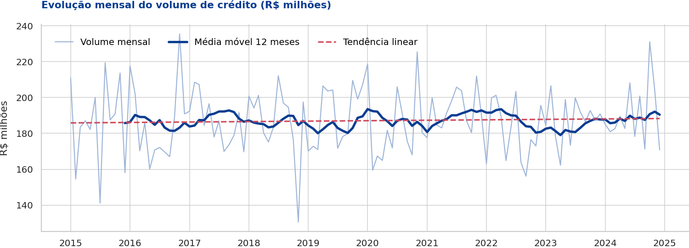
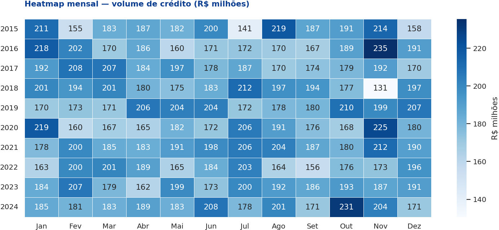
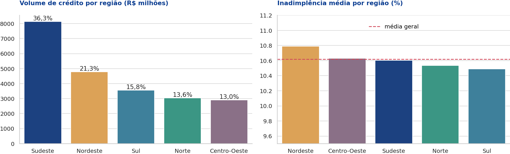
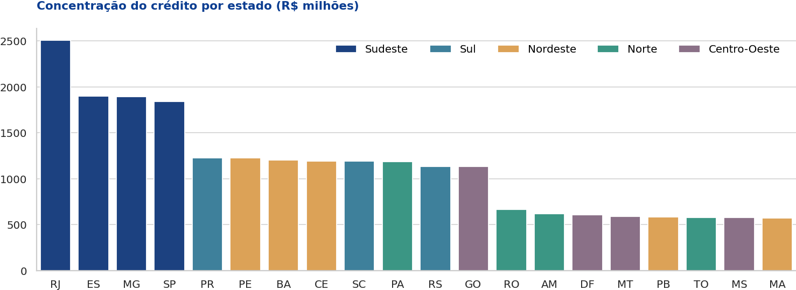
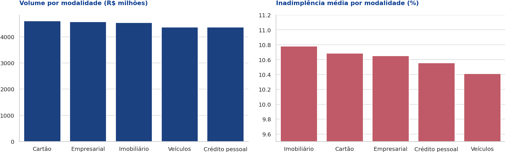
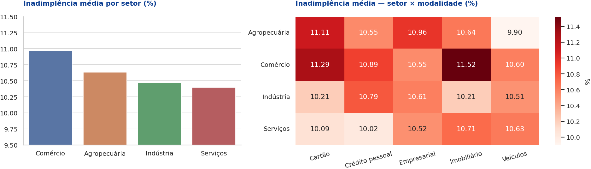
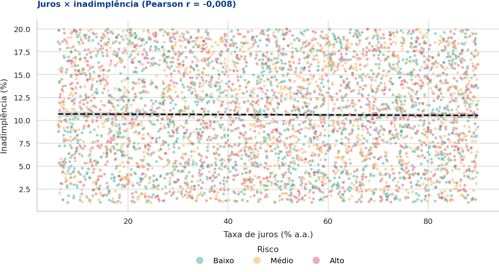
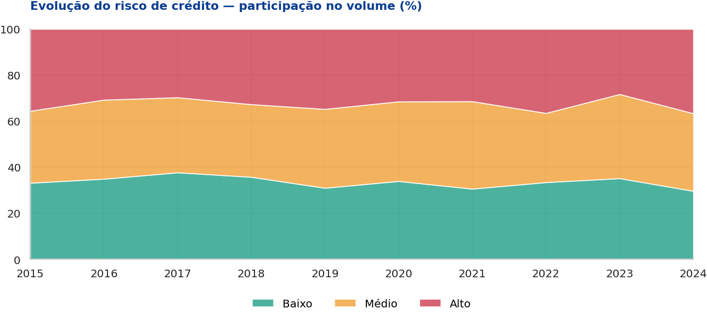
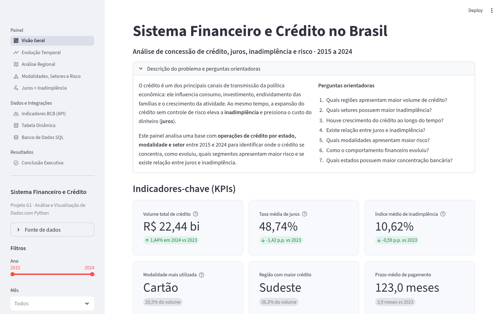

Análise da concessão de crédito, taxas de juros, inadimplência e risco por região, estado, modalidade e setor econômico entre 2015 e 2024 — com notebook analítico, banco de dados relacional e dashboard interativo.
O crédito financia consumo e investimento, mas sua expansão sem controle de risco eleva a inadimplência e encarece o dinheiro. Entender onde o crédito se concentra, como evolui e quais segmentos são mais arriscados é essencial para políticas de concessão, precificação e monitoramento de carteiras.
O objetivo do projeto é desenvolver uma aplicação analítica completa para investigar esses padrões, do tratamento dos dados à publicação de um painel interativo.
Base simulada fornecida para a disciplina, com registros mensais de operações de crédito por estado, modalidade e setor. Complementada por séries reais do Banco Central obtidas via API.
| Coluna | Descrição | Coluna | Descrição |
|---|---|---|---|
ano, mes, data | Período de referência | quantidade_clientes | Total de clientes |
regiao, uf | Região e estado | renda_media | Renda média regional (R$) |
modalidade_credito | Cartão, pessoal, empresarial, imobiliário, veículos | prazo_medio_pagamento | Prazo médio (meses) |
valor_credito | Valor concedido (R$) | risco_credito | Baixo, Médio, Alto |
taxa_juros | Taxa média de juros (% a.a.) | setor_economico | Agropecuária, Comércio, Indústria, Serviços |
inadimplencia_percentual | Índice de inadimplência (%) | API BCB (SGS) | Selic (4189), inadimplência do SFN (21082), saldo da carteira (20539) |
Leitura com tratamento de BOM, padronização de textos e tipos, verificação de nulos e duplicados, regras de consistência e detecção de outliers (IQR).
Período, trimestre, ticket médio por cliente, valor estimado em atraso, faixas de juros, renda e prazo e indicador de risco alto.
Estatísticas descritivas, distribuições, séries temporais com média móvel e tendência, comparação entre grupos e correlação (Pearson e Spearman).
Persistência em SQLite com SQLAlchemy em esquema estrela (dimensões e fato) e consultas SQL analíticas.
Consumo da API SGS do Banco Central com Requests para comparar a base com Selic e inadimplência reais.
Painel multipágina em Streamlit com filtros, KPIs dinâmicos e gráficos interativos (Plotly), publicado no Streamlit Community Cloud.









Ano, mês, região, estado, modalidade, risco de crédito e setor econômico — além de upload de outro CSV com a mesma estrutura.
st.navigation)Tecnologias em azul escuro são as obrigatórias da disciplina.
projeto-g1/ ├── app.py # dashboard Streamlit (multipágina) ├── requirements.txt ├── README.md ├── index.html # esta página (GitHub Pages) ├── .streamlit/config.toml # tema do dashboard ├── dados/ │ └── simulacao_sistema_financeiro_brasil.csv ├── database/ │ ├── banco.py # SQLAlchemy: modelo, carga e consultas │ └── sistema_financeiro.db ├── notebooks/ │ └── analise_sistema_financeiro.ipynb └── imagens/ # gráficos gerados no notebook
O sistema de crédito analisado é estável e pouco concentrado: o volume é liderado pelo Sudeste (com destaque para o RJ) principalmente pelo número de operações, e não pelo porte delas. Os indicadores de risco são homogêneos entre regiões, setores e modalidades, e a ausência de correlação entre juros e inadimplência indica que o preço do crédito não reflete o risco observado.
Recomendações: monitorar os estados críticos (PR, CE, ES) e o setor de Comércio; revisar a precificação incorporando o perfil do tomador e garantias; diversificar a carteira entre modalidades; e acompanhar Selic e inadimplência do SFN pela API do Banco Central.
Limitação: a base é simulada, com distribuições praticamente uniformes — as conclusões demonstram o método e devem ser validadas com dados reais.